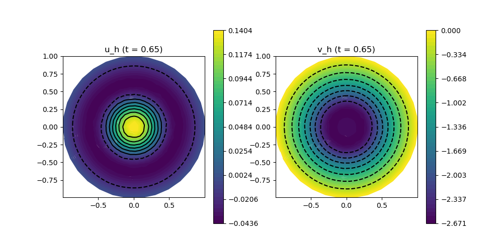

212 : Wave Equation 2D
This example computes the transient solution of the wave equation
\[\frac{\partial^2 u}{\partial t^2} = c \Delta u + f\]
with propagation speed $c$ and source term $f$.
The equation can be rewritten into the system of two PDEs
\[\begin{aligned} u_t & = v\\ v_t & = c \Delta u + f. \end{aligned}\]
Here, we solve the equations on a circle domain with $c = 1$ and $f = 0$ for some given initial state and homogeneous Dirichlet boundary conditions.
module Example212_WaveEquation2D
using GradientRobustMultiPhysics
using ExtendableGrids
using GridVisualize
using SimplexGridFactory
using Triangulate
const u0 = DataFunction((result,x) -> (result[1] = 1 - x[1]^2 - x[2]^2), [1,2]; dependencies = "X", bonus_quadorder = 2)
const v0 = DataFunction([0.0])
const f = DataFunction([0.0])
const c = 1
# everything is wrapped in a main function
function main(; verbosity = 0, order = 1, reflevel = 2, T = 0.65, timestep = 1//100, plot_step = 1//20, Plotter = nothing)
# set log level
set_verbosity(verbosity)
# initial grid and final time
xgrid = grid_circle([0,0],1.0, 2^(3+reflevel); maxvol = 4.0^-(2+reflevel))
# generate problem description and assign nonlinear operator and data
Problem = PDEDescription("Wave equation")
add_unknown!(Problem; unknown_name = "u", equation_name = "2nd order to 1st order substitution")
add_unknown!(Problem; unknown_name = "p", equation_name = "wave equation")
add_operator!(Problem, [1,2], ReactionOperator(-1))
add_operator!(Problem, [2,1], LaplaceOperator(c))
add_rhsdata!(Problem, 1, LinearForm(Identity, f))
add_boundarydata!(Problem, 1, [1], HomogeneousDirichletBoundary)
add_boundarydata!(Problem, 2, [1], HomogeneousDirichletBoundary)
# generate FESpace and solution vector
FEType = H1Pk{1,2,order}
FES = FESpace{FEType}(xgrid)
Solution = FEVector([FES, FES])
# set initial solution
interpolate!(Solution[1], u0)
# prepare time-dependent solver
sys = TimeControlSolver(Problem, Solution, BackwardEuler; skip_update = [-1], timedependent_equations = [1,2], T_time = typeof(timestep))
# prepare plot
p = GridVisualizer(; Plotter = Plotter, layout = (1,2), clear = true, resolution = (1000,500))
node_views = [nodevalues_view(Solution[1])[1], nodevalues_view(Solution[2])[1]]
# this function is called after each timestep
plot_step_count = Int(ceil(plot_step/timestep))
function do_after_each_timestep(sys)
if mod(sys.cstep,plot_step_count) == 0
scalarplot!(p[1,1], xgrid, node_views[1], levels = 7, title = "u_h (t = $(Float64(sys.ctime)))")
scalarplot!(p[1,2], xgrid, node_views[2], levels = 7, title = "v_h (t = $(Float64(sys.ctime)))")
end
return nothing
end
# use time control solver by GradientRobustMultiPhysics
advance_until_time!(sys, timestep, T; do_after_each_timestep = do_after_each_timestep)
end
function grid_circle(center, radius, n; maxvol = 0.1)
builder=SimplexGridBuilder(Generator=Triangulate)
points = [point!(builder, center[1]+radius*sin(t),center[2]+radius*cos(t)) for t in range(0,2π,length=n)]
for i=1:n-1
facet!(builder,points[i],points[i+1])
end
facet!(builder,points[end],points[1])
simplexgrid(builder,maxvolume = maxvol)
end
endThis page was generated using Literate.jl.
Default output:
julia> Example212_WaveEquation2D.main()
┌ Info: ----- Preparing time control solver for Wave equation using BackwardEuler -----
│ Equation (1.1) 2nd order to 1st order substitution for u (discretised by (H1Pk{1,2,1}, ndofs = 656), timedependent = yes
└ Equation (1.2) wave equation for p (discretised by (H1Pk{1,2,1}, ndofs = 656), timedependent = yes
[ Info: Advancing in time from 0.0 until 0.65
STEP | TIME | LSRESIDUAL | RUNTIME | CHANGE
| | (total) | (s) u p
1 | 1.0000e-02 | 6.4190e-15 | 1.636e+00 | 1.1819e-02 1.1819e+00
2 | 2.0000e-02 | 6.2420e-15 | 1.538e-02 | 2.2487e-02 1.0776e+00
3 | 3.0000e-02 | 6.1957e-15 | 1.402e-03 | 3.2291e-02 1.0138e+00
4 | 4.0000e-02 | 5.9783e-15 | 1.369e-03 | 4.1618e-02 9.8501e-01
5 | 5.0000e-02 | 6.5052e-15 | 1.321e-03 | 5.0719e-02 9.6744e-01
6 | 6.0000e-02 | 6.1456e-15 | 1.317e-03 | 5.9698e-02 9.5118e-01
7 | 7.0000e-02 | 6.3338e-15 | 1.327e-03 | 6.8584e-02 9.3756e-01
8 | 8.0000e-02 | 6.3753e-15 | 1.309e-03 | 7.7380e-02 9.2783e-01
9 | 9.0000e-02 | 6.3259e-15 | 1.303e-03 | 8.6082e-02 9.1989e-01
10 | 1.0000e-01 | 5.9353e-15 | 1.493e-03 | 9.4676e-02 9.1108e-01
11 | 1.1000e-01 | 5.9418e-15 | 1.306e-03 | 1.0315e-01 9.0044e-01
12 | 1.2000e-01 | 6.0772e-15 | 1.312e-03 | 1.1148e-01 8.8843e-01
13 | 1.3000e-01 | 5.4769e-15 | 1.323e-03 | 1.1968e-01 8.7591e-01
14 | 1.4000e-01 | 6.0231e-15 | 1.309e-03 | 1.2773e-01 8.6349e-01
15 | 1.5000e-01 | 5.8279e-15 | 1.309e-03 | 1.3563e-01 8.5141e-01
16 | 1.6000e-01 | 5.4941e-15 | 1.494e-03 | 1.4339e-01 8.3969e-01
17 | 1.7000e-01 | 5.7026e-15 | 1.310e-03 | 1.5101e-01 8.2821e-01
18 | 1.8000e-01 | 5.4125e-15 | 1.475e-03 | 1.5850e-01 8.1685e-01
19 | 1.9000e-01 | 5.6005e-15 | 1.320e-03 | 1.6584e-01 8.0552e-01
20 | 2.0000e-01 | 5.7824e-15 | 1.303e-03 | 1.7305e-01 7.9416e-01
21 | 2.1000e-01 | 5.7196e-15 | 1.479e-03 | 1.8011e-01 7.8276e-01
22 | 2.2000e-01 | 5.3832e-15 | 1.318e-03 | 1.8703e-01 7.7132e-01
23 | 2.3000e-01 | 5.4384e-15 | 1.299e-03 | 1.9380e-01 7.5984e-01
24 | 2.4000e-01 | 5.5919e-15 | 1.303e-03 | 2.0043e-01 7.4833e-01
25 | 2.5000e-01 | 5.6522e-15 | 1.316e-03 | 2.0692e-01 7.3680e-01
26 | 2.6000e-01 | 5.3248e-15 | 1.308e-03 | 2.1325e-01 7.2528e-01
27 | 2.7000e-01 | 5.5345e-15 | 1.307e-03 | 2.1945e-01 7.1378e-01
28 | 2.8000e-01 | 5.5996e-15 | 1.312e-03 | 2.2549e-01 7.0235e-01
29 | 2.9000e-01 | 5.4112e-15 | 1.299e-03 | 2.3138e-01 6.9100e-01
30 | 3.0000e-01 | 5.2979e-15 | 1.300e-03 | 2.3712e-01 6.7978e-01
31 | 3.1000e-01 | 5.2303e-15 | 1.311e-03 | 2.4272e-01 6.6868e-01
32 | 3.2000e-01 | 4.9371e-15 | 1.472e-03 | 2.4816e-01 6.5770e-01
33 | 3.3000e-01 | 5.2338e-15 | 1.301e-03 | 2.5345e-01 6.4686e-01
34 | 3.4000e-01 | 4.8974e-15 | 1.312e-03 | 2.5860e-01 6.3613e-01
35 | 3.5000e-01 | 5.1035e-15 | 1.476e-03 | 2.6359e-01 6.2552e-01
36 | 3.6000e-01 | 5.0597e-15 | 1.302e-03 | 2.6843e-01 6.1500e-01
37 | 3.7000e-01 | 4.4759e-15 | 1.327e-03 | 2.7312e-01 6.0458e-01
38 | 3.8000e-01 | 4.9569e-15 | 1.303e-03 | 2.7766e-01 5.9423e-01
39 | 3.9000e-01 | 4.7766e-15 | 1.301e-03 | 2.8205e-01 5.8396e-01
40 | 4.0000e-01 | 4.7911e-15 | 1.312e-03 | 2.8629e-01 5.7375e-01
41 | 4.1000e-01 | 4.2395e-15 | 1.306e-03 | 2.9038e-01 5.6361e-01
42 | 4.2000e-01 | 4.3717e-15 | 1.298e-03 | 2.9432e-01 5.5354e-01
43 | 4.3000e-01 | 4.1079e-15 | 1.317e-03 | 2.9811e-01 5.4351e-01
44 | 4.4000e-01 | 4.2179e-15 | 1.469e-03 | 3.0174e-01 5.3353e-01
45 | 4.5000e-01 | 4.1266e-15 | 1.477e-03 | 3.0522e-01 5.2358e-01
46 | 4.6000e-01 | 4.0741e-15 | 1.469e-03 | 3.0854e-01 5.1366e-01
47 | 4.7000e-01 | 3.7995e-15 | 1.298e-03 | 3.1170e-01 5.0376e-01
48 | 4.8000e-01 | 3.8925e-15 | 1.318e-03 | 3.1471e-01 4.9390e-01
49 | 4.9000e-01 | 3.7848e-15 | 1.474e-03 | 3.1756e-01 4.8410e-01
50 | 5.0000e-01 | 3.9534e-15 | 1.301e-03 | 3.2024e-01 4.7438e-01
51 | 5.1000e-01 | 3.5234e-15 | 1.313e-03 | 3.2277e-01 4.6478e-01
52 | 5.2000e-01 | 3.7755e-15 | 1.304e-03 | 3.2513e-01 4.5533e-01
53 | 5.3000e-01 | 3.4014e-15 | 1.480e-03 | 3.2732e-01 4.4609e-01
54 | 5.4000e-01 | 3.8182e-15 | 1.312e-03 | 3.2935e-01 4.3708e-01
55 | 5.5000e-01 | 3.7465e-15 | 1.467e-03 | 3.3121e-01 4.2836e-01
56 | 5.6000e-01 | 3.4825e-15 | 1.303e-03 | 3.3291e-01 4.1997e-01
57 | 5.7000e-01 | 3.5265e-15 | 1.314e-03 | 3.3444e-01 4.1195e-01
58 | 5.8000e-01 | 3.1576e-15 | 1.297e-03 | 3.3580e-01 4.0434e-01
59 | 5.9000e-01 | 3.2793e-15 | 1.467e-03 | 3.3700e-01 3.9717e-01
60 | 6.0000e-01 | 3.2031e-15 | 1.315e-03 | 3.3803e-01 3.9047e-01
61 | 6.1000e-01 | 3.2794e-15 | 1.296e-03 | 3.3889e-01 3.8423e-01
62 | 6.2000e-01 | 3.1949e-15 | 1.468e-03 | 3.3959e-01 3.7844e-01
63 | 6.3000e-01 | 3.3508e-15 | 1.313e-03 | 3.4012e-01 3.7309e-01
64 | 6.4000e-01 | 3.2204e-15 | 1.308e-03 | 3.4048e-01 3.6813e-01
65 | 6.5000e-01 | 3.0705e-15 | 1.482e-03 | 3.4067e-01 3.6355e-01 